Arsip digital naskah NKP, NASKAP, dan Policy Brief: cara mencari, membaca, mengunggah, dan mengelola naskah.
Alamat situs arsip-sespimma.awansurya.com
Untuk serdik, pengunggah, reviewer, dan admin Versi 1 · Oktober 2026
Daftar Isi
Baca bagian 1–4 bila Anda hanya ingin mencari dan membaca naskah. Bagian lainnya untuk petugas.
1 Mengenal ARSIP SESPIMMA Semua pengguna
2 Masuk ke situs & mengganti kata sandi Semua pengguna
3 Mencari naskah Semua pengguna
4 Membaca naskah Semua pengguna
5 Mengunggah naskah Pengunggah, Reviewer
6 Memeriksa naskah & cek kemiripan Reviewer
7 Impor dari Google Drive Reviewer, Admin
8 Mengelola akun pengguna Admin
9 Aturan penggunaan Semua pengguna
10 Pertanyaan yang sering muncul Semua pengguna
BAGIAN 1
Mengenal ARSIP SESPIMMA
ARSIP SESPIMMA adalah tempat menyimpan dan mencari naskah tugas serdik dari setiap angkatan, sehingga naskah angkatan terdahulu mudah ditemukan tanpa perlu mencari link Google Drive satu per satu.
Apa yang bisa dilakukan?
Mencari sampai ke isi naskah, bukan hanya judul. Hasil pencarian menunjukkan di halaman berapa kata yang Anda cari muncul.
Menyaring naskah berdasarkan kategori (NKP, NASKAP, Policy Brief), angkatan, tahun, topik, pokjar, dan lokus.
Membaca naskah langsung di browser, tanpa mengunduh.
Mengunggah naskah. Judul, penulis, dan data lain terisi otomatis dari halaman sampul.
Memeriksa kemiripan antarnaskah, termasuk naskah yang hanya mengganti nama tempat (lokus).
Siapa melakukan apa?
Setiap akun memiliki peran. Peran menentukan menu apa saja yang terlihat.
Peran
Yang bisa dilakukan
Pembaca peran umum serdik
Mencari dan membaca naskah yang sudah diterbitkan.
Pengunggah
Semua yang bisa dilakukan Pembaca, ditambah mengunggah naskah. Naskah masuk antrean dan baru terlihat semua orang setelah disetujui Reviewer.
Reviewer
Ditambah: menyetujui atau menolak naskah, melihat hasil cek kemiripan, memperbaiki data naskah, dan mengimpor dari Google Drive.
Admin
Ditambah: membuat akun, mengatur peran, membuka akun yang terkunci, serta mengelola kategori dan angkatan.
Situs tertutupSemua halaman hanya bisa dibuka setelah masuk (login). Situs tidak muncul di Google, dan setiap pencarian serta pembukaan naskah tercatat.
BAGIAN 2
Masuk ke Situs
Anda memerlukan akun dari admin arsip. Username umumnya adalah NRP Anda.
Cara masuk
Buka browser (Chrome, Edge, Firefox, atau browser di HP), lalu ketik alamat https://arsip-sespimma.awansurya.com.
Isi Username / NRP dan Kata sandi yang diberikan admin.
Tekan tombol Masuk. Anda akan dibawa ke halaman Beranda.
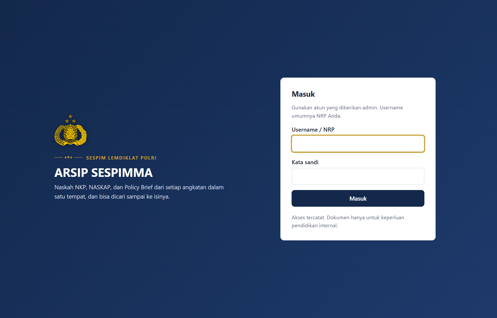
Gambar 2.1 · Halaman masuk
Salah kata sandi 5 kali = terkunci 15 menitDemi keamanan, bila kata sandi salah 5 kali berturut-turut, akun Anda terkunci sementara di perangkat tersebut. Tunggu 15 menit lalu coba lagi, atau minta admin membuka kuncinya.
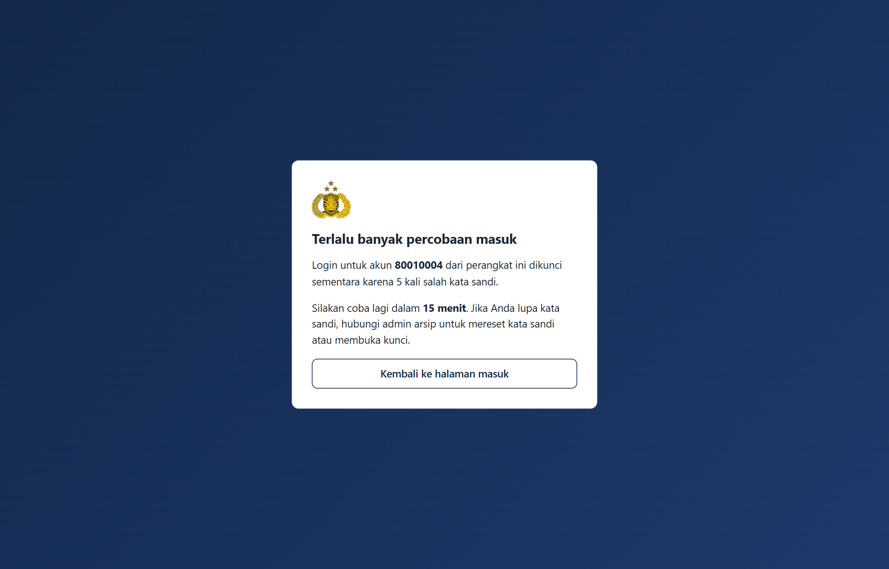
Gambar 2.2 · Tampilan saat akun terkunci sementara
Mengganti kata sandi
Sebaiknya ganti kata sandi pemberian admin saat pertama kali masuk.
Klik nama Anda di pojok kanan atas.
Isi kata sandi lama, lalu kata sandi baru dua kali.
Tekan Simpan.
Kata sandi yang baikMinimal 8 karakter, bukan angka semua, dan tidak sama dengan NRP atau nama Anda.
Lupa kata sandi? Hubungi admin arsip. Admin akan membuatkan kata sandi baru untuk Anda.
Keluar: tekan tombol Keluar di pojok kanan atas, terutama bila memakai komputer bersama.
BAGIAN 3
Mencari Naskah
Ketik kata kunci di kotak pencarian, seperti mencari di Google. Sistem mencari di judul, nama penulis, lokus, kata kunci, abstrak, dan isi setiap halaman naskah.
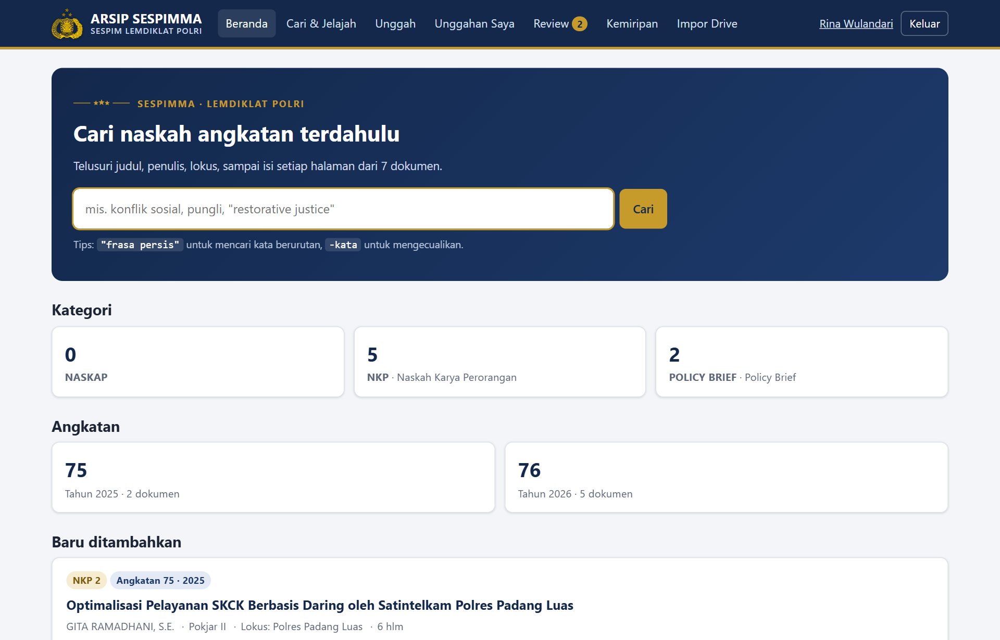
Gambar 3.1 · Beranda: kotak pencarian, jumlah naskah per kategori dan angkatan, serta naskah terbaru
Cara mencari
Ketik kata kunci di kotak pencarian, misalnya patroli dialogis, lalu tekan Cari atau Enter.
Perhatikan daftar hasil. Setiap hasil menampilkan kategori, angkatan, judul, penulis, lokus, dan cuplikan teks dengan kata yang dicari diberi warna kuning.
Tulisan “Hlm 3” di depan cuplikan berarti kata tersebut ada di halaman 3. Klik cuplikannya untuk langsung membuka halaman itu.
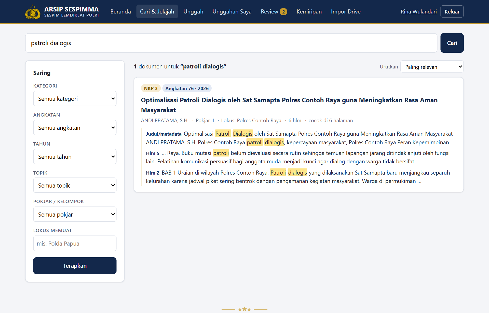
Gambar 3.2 · Hasil pencarian beserta cuplikan dan nomor halaman
Tips agar hasil lebih tepat
Anda menulis
Hasilnya
konflik sosial
Naskah yang memuat kedua kata tersebut (urutannya bebas).
"restorative justice"
Kata harus berurutan persis seperti di dalam tanda kutip.
pengawasan -narkoba
Naskah tentang pengawasan, kecuali yang menyebut narkoba.
menangani
Kata berimbuhan dikenali otomatis: juga menemukan penanganan dan ditangani.
narkotika
Singkatan dan sinonim dikenali: juga menemukan narkoba. Begitu pula pungli = pungutan liar, polres = kepolisian resor.
Tidak ada naskah yang memuat semua kata?Sistem otomatis menampilkan naskah yang memuat sebagian kata, dan memberi tahu Anda dengan kotak biru di atas hasil.
Menyaring dan mengurutkan
Di sebelah kiri hasil ada kotak Saring. Pilih kategori, angkatan, tahun, topik, pokjar, atau ketik sebagian nama lokus (misalnya Polda Papua), lalu tekan Terapkan. Pilihan Urutkan di kanan atas mengatur urutan hasil: paling relevan, terbaru, judul A–Z, angkatan, atau penulis.
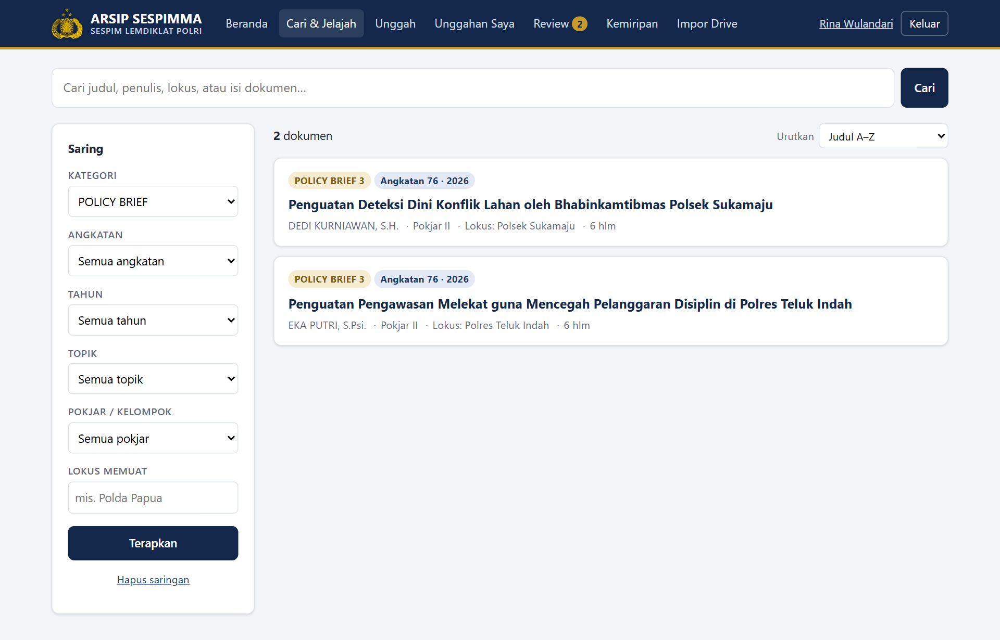
Gambar 3.3 · Menjelajah semua Policy Brief, diurutkan berdasarkan judul
Menjelajah tanpa kata kunciKosongkan kotak pencarian lalu pilih saringan, misalnya Angkatan 76, untuk melihat semua naskah angkatan itu. Di Beranda, Anda juga bisa langsung mengklik kotak kategori atau angkatan.
BAGIAN 4
Membaca Naskah
Klik judul naskah di hasil pencarian untuk membuka halaman detailnya.
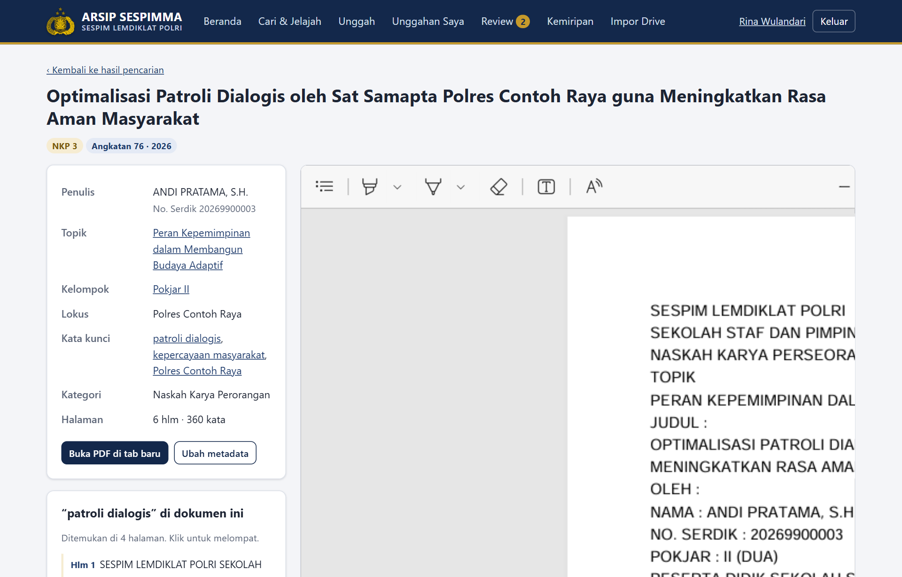
Gambar 4.1 · Halaman detail: data naskah di kiri, PDF di kanan
Isi halaman detail
Kolom kiri berisi penulis, topik, pokjar, lokus, kata kunci, dan jumlah halaman. Klik topik atau pokjar untuk melihat naskah lain dengan topik atau pokjar yang sama.
Bila Anda datang dari pencarian, kotak “… di dokumen ini” menampilkan semua halaman yang memuat kata tersebut. Klik salah satunya untuk melompat ke halaman itu.
Kolom kanan menampilkan PDF naskah. Gulir atau gunakan tombol +/– untuk memperbesar.
Tombol Buka PDF di tab baru menampilkan naskah layar penuh.
Watermark nama pembaca
Setiap PDF yang dibuka otomatis diberi tanda air (watermark) di setiap halaman:
Nama dan NRP pembaca, ditulis miring di tengah halaman.
Di bagian bawah halaman: “Diakses oleh … pada tanggal … jam …”.
Watermark dibuat khusus untuk setiap orang yang membuka, sehingga dua orang yang membuka naskah yang sama akan melihat nama masing-masing.
Jangan menyebarluaskan naskahNaskah hanya untuk keperluan pendidikan. Watermark dan catatan akses membuat setiap salinan yang tersebar dapat dilacak ke akun pembacanya.
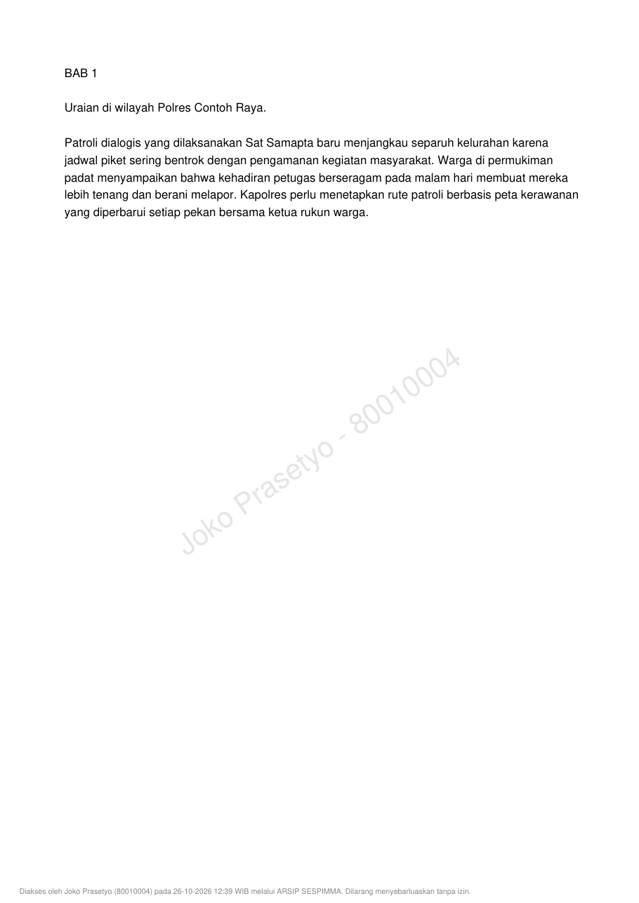
Gambar 4.2 · Halaman PDF yang dibuka oleh pengguna “Joko Prasetyo”
Membuka dari HP
Situs dapat dibuka dari browser HP. Menu ada di bagian atas dan dapat digeser ke kiri atau kanan. Kotak saringan tampil ringkas di atas hasil.
Di HP, PDF biasanya tidak tampil di dalam halaman. Tekan Buka PDF di tab baru untuk membacanya.
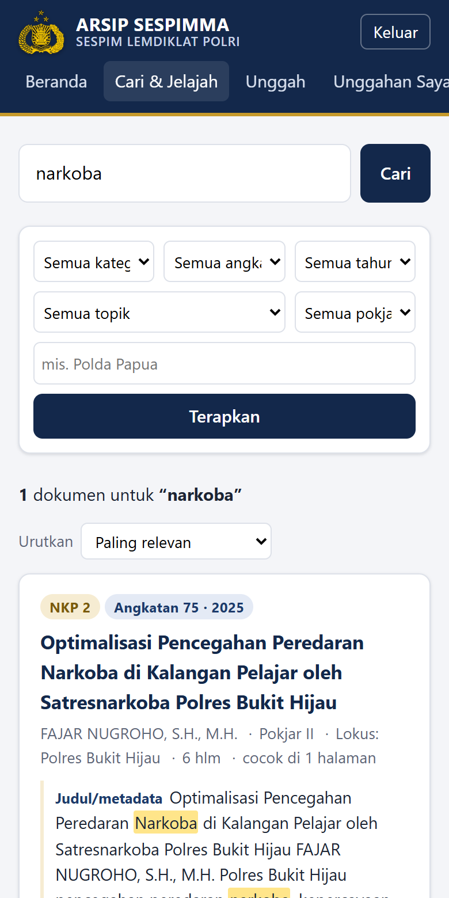
Gambar 4.3 · Tampilan di HP
BAGIAN 5
Mengunggah Naskah
Untuk akun berperan Pengunggah atau Reviewer. Menu Unggah ada di bagian atas.
Langkah mengunggah
Klik menu Unggah.
Pada File PDF, pilih naskah Anda. Hanya PDF, maksimal 6 MB.
Pilih Kategori (NKP / NASKAP / Policy Brief) dan Angkatan.
Kolom lain boleh dikosongkan. Judul, topik, penulis, NRP, nomor serdik, pokjar, lokus, abstrak, dan kata kunci akan terisi otomatis dari halaman sampul.
Tekan tombol Unggah.
Isian otomatis tidak tepat?Isi kolomnya sendiri sebelum menekan Unggah. Isian Anda tidak akan ditimpa sistem.
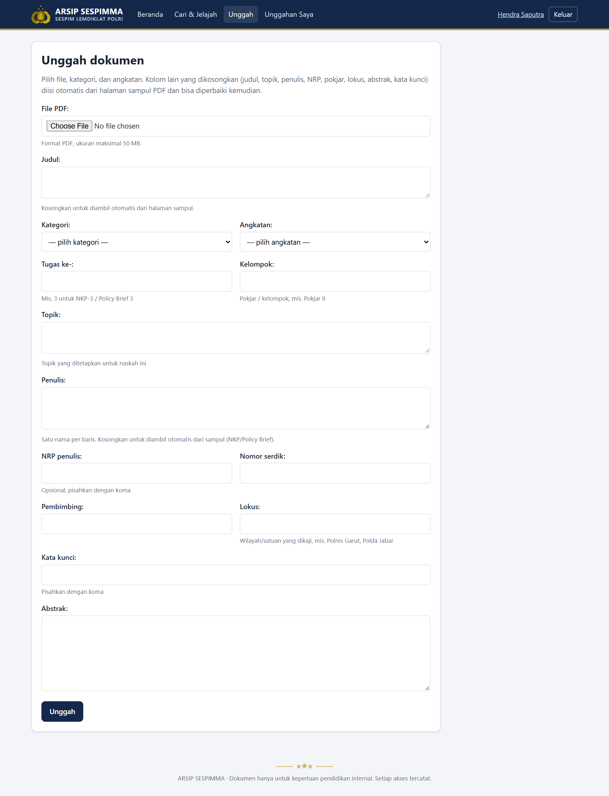
Gambar 5.1 · Formulir unggah
Setelah diunggah
Naskah dari Pengunggah berstatus Menunggu review dan belum terlihat oleh pembaca lain sampai disetujui Reviewer.
Pantau statusnya di menu Unggahan Saya. Bila ditolak, alasan penolakan dari Reviewer tampil di sana.
Reviewer yang mengunggah dapat mencentang Langsung terbitkan agar naskah langsung terlihat.
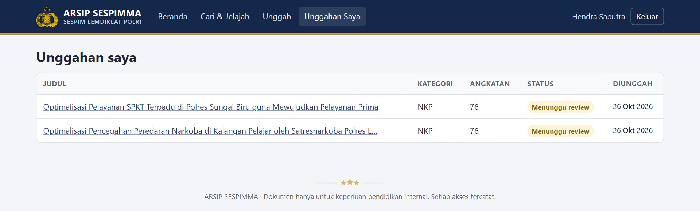
Gambar 5.2 · Menu Unggahan Saya
Pesan yang mungkin muncul
Pesan
Artinya & yang perlu dilakukan
Ukuran file maksimal 6 MB
File terlalu besar. Perkecil PDF (misalnya “Save as PDF” ulang dari Word dengan kualitas standar), atau minta Reviewer mengimpornya lewat Google Drive.
File yang sama persis sudah ada di arsip
Naskah ini sudah pernah diunggah. Tidak perlu diunggah lagi.
Judul/penulis tidak terbaca dari sampul
Halaman sampul tidak memakai format baku. Isi kolom Judul dan Penulis secara manual.
PDF hasil scan, sedang dibaca dengan OCR
Naskah berupa hasil scan (gambar). Sistem membaca teksnya otomatis di latar belakang dalam beberapa menit, setelah itu isinya bisa dicari.
BAGIAN 6
Memeriksa Naskah & Cek Kemiripan
Untuk Reviewer. Setiap naskah yang masuk otomatis dibandingkan dengan seluruh isi arsip.
Antrean review
Menu Review (dengan angka jumlah antrean) menampilkan naskah yang menunggu keputusan, lengkap dengan kemiripan tertinggi terhadap naskah lain.
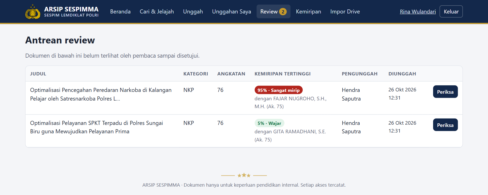
Gambar 6.1 · Antrean review: naskah pertama 95% mirip dengan naskah angkatan sebelumnya
Arti tingkat kemiripan
Label
Artinya
40% ke atas · Sangat mirip
Sebagian besar isi sama dengan naskah lain. Wajib diperiksa lewat laporan perbandingan.
20–39% · Perlu diperiksa
Ada bagian cukup panjang yang sama. Periksa apakah itu kutipan wajar atau salinan.
8–19% · Mirip sebagian
Beberapa bagian sama, sering karena mengutip peraturan atau sumber yang sama.
di bawah 8% · Wajar
Tidak ada indikasi salinan.
Bagaimana sistem mendeteksi “ganti lokus”?Sebelum dibandingkan, nama tempat atau satuan (misalnya Polres Bukit Hijau) dan angka disamarkan. Naskah yang hanya mengganti lokus atau tahun tetap terdeteksi sama. Teks baku yang dipakai semua orang (sampul, surat pernyataan, kalimat topik) diabaikan.
Hasil adalah petunjuk, bukan vonisSelalu buka laporan perbandingan dan nilai sendiri sebelum menolak naskah.
Laporan perbandingan
Klik Bandingkan (di menu Kemiripan atau di kartu kemiripan pada halaman naskah). Laporan menampilkan:
Persentase dua arah: berapa persen isi naskah A ada di naskah B, dan sebaliknya.
Contoh penggantian, misalnya BUKIT HIJAU → LEMBAH DAMAI.
Bagian yang sama, berdampingan per halaman, dengan kata yang berbeda diberi warna merah muda.
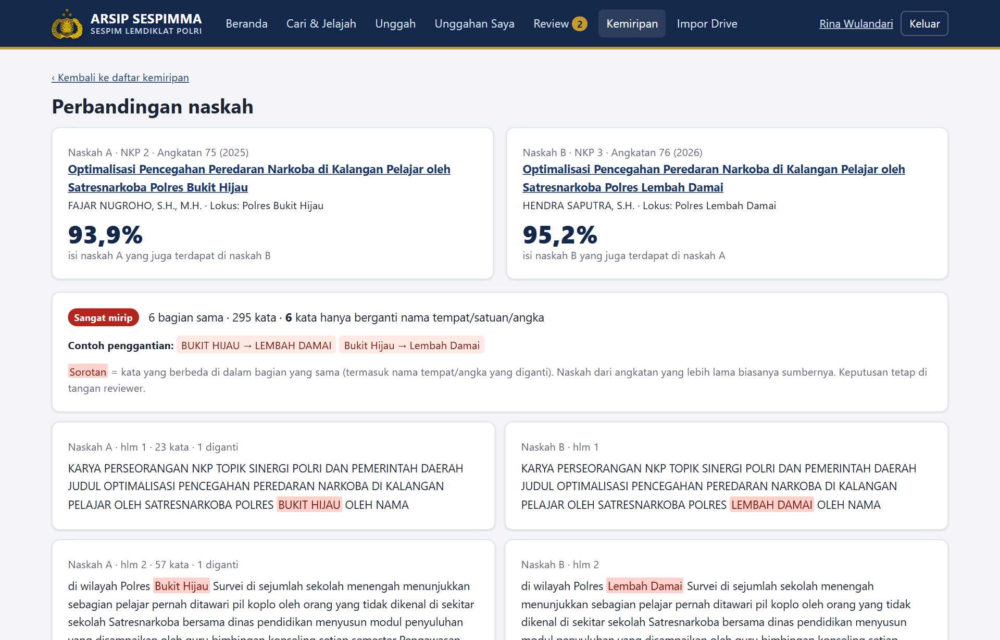
Gambar 6.2 · Laporan perbandingan dua naskah
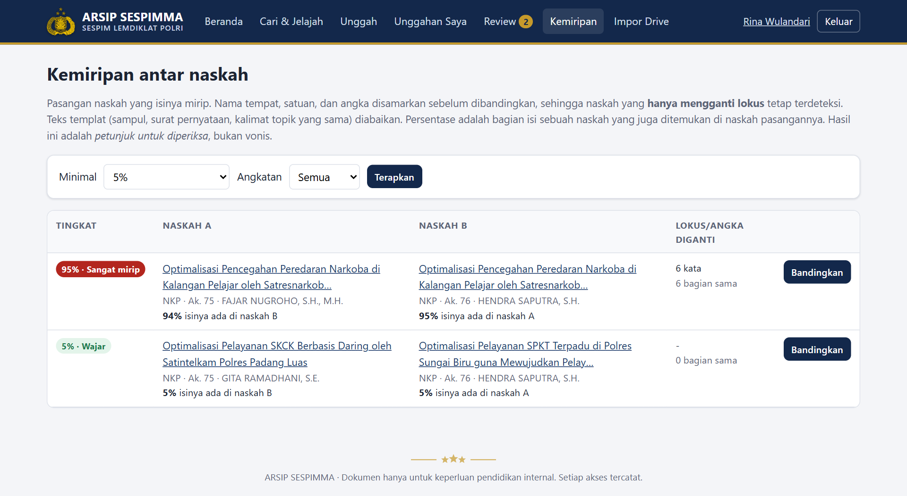
Gambar 6.3 · Menu Kemiripan: daftar semua pasangan naskah yang mirip
Menyetujui atau menolak
Di antrean review, klik Periksa pada naskah.
Baca naskahnya dan lihat kartu Kemiripan dengan naskah lain.
Pada kartu Review, klik Setujui & terbitkan atau Tolak. Penolakan wajib disertai catatan alasan, yang akan dibaca pengunggah.
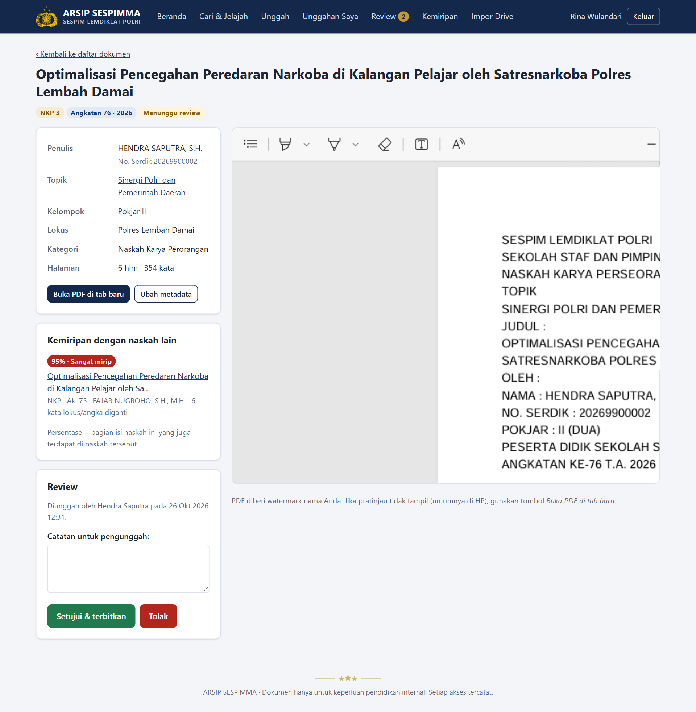
Gambar 6.4 · Halaman naskah bagi Reviewer: kartu kemiripan dan kartu review
Memperbaiki data naskah
Bila judul, penulis, lokus, atau data lain keliru, buka naskahnya lalu klik Ubah metadata, perbaiki, dan tekan Simpan. Perubahan langsung dipakai dalam pencarian.
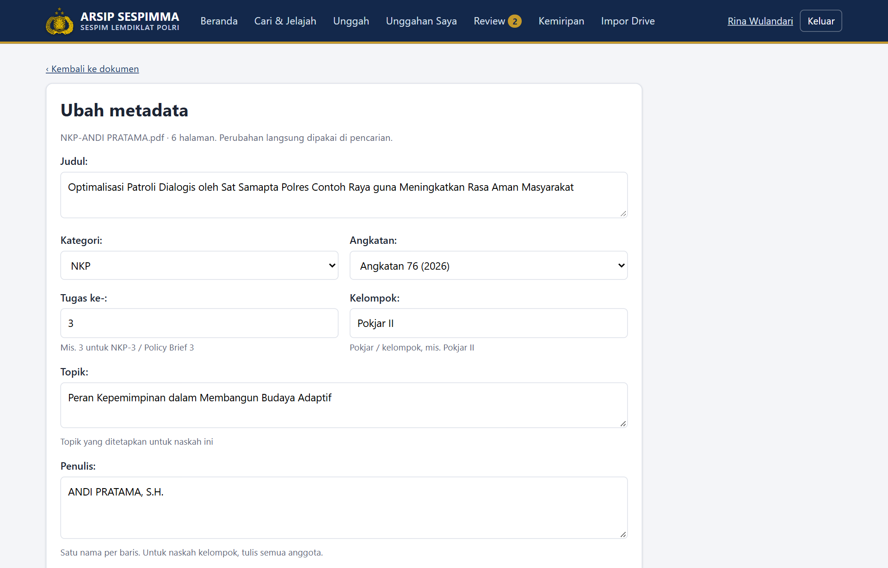
Gambar 6.5 · Formulir ubah metadataBAGIAN 7
Impor dari Google Drive
Untuk Reviewer dan Admin. Cara tercepat memasukkan satu folder pengumpulan tugas sekaligus, misalnya seluruh NKP satu angkatan.
Sebelum mulai
Folder harus dapat dibuka dengan linkDi Google Drive, klik kanan folder → Bagikan → bagian Akses umum pilih “Siapa saja yang memiliki link”. Folder yang hanya dibagikan ke email tertentu tidak bisa dibaca sistem.
Langkah impor
Klik menu Impor Drive.
Tempel link folder Google Drive. Subfolder per serdik ikut terbaca.
Kolom kategori, nomor angkatan, dan tahun biasanya dikosongkan. Sistem membacanya dari sampul. Isi hanya bila sampul angkatan tersebut tidak mencantumkannya.
Centang Langsung terbitkan bila naskah tidak perlu melewati antrean review.
Tekan Mulai impor. Bilah kemajuan muncul. Halaman boleh ditutup, proses tetap berjalan.
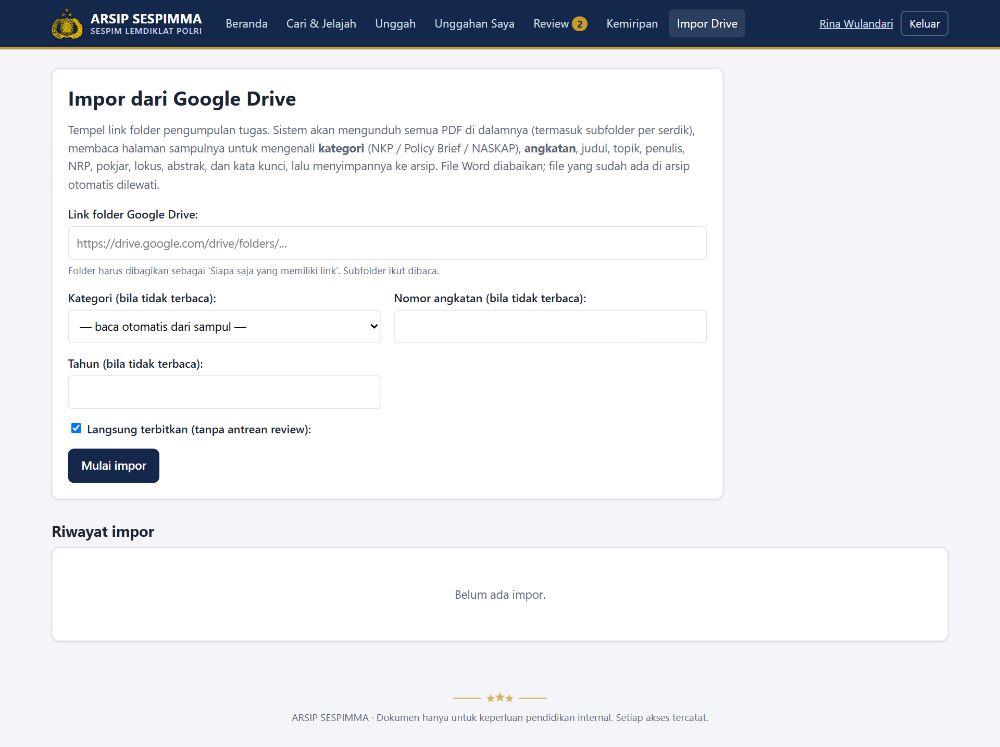
Gambar 7.1 · Formulir Impor dari Google Drive dan riwayat impor
Membaca hasil impor
Status
Artinya
Masuk
Naskah berhasil disimpan ke arsip.
Sudah ada
File yang sama persis sudah ada di arsip, sehingga dilewati. Aman bila impor diulang.
Dilewati
Serdik hanya mengunggah file Word, tanpa PDF. Minta versi PDF-nya.
Gagal
File rusak, atau kategori/angkatan tidak terbaca. Keterangannya ada di kolom paling kanan.
Batas 6 MB tidak berlaku di siniNaskah yang tebal atau hasil scan tetap bisa masuk lewat impor Google Drive.
BAGIAN 8
Mengelola Akun Pengguna
Untuk Admin. Semua pengaturan akun ada di menu Panel Admin.
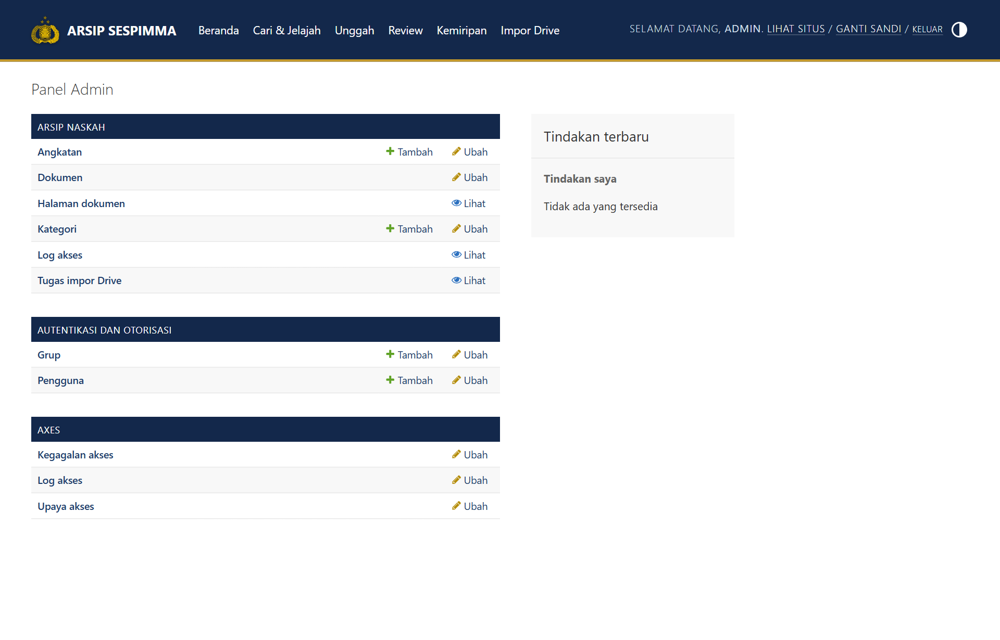
Gambar 8.1 · Panel Admin
Membuat akun baru
Di Panel Admin, pada baris Pengguna, klik + Tambah.
Isi Nama pengguna dengan NRP, lalu kata sandi awal dua kali. Tekan Simpan dan terus mengedit.
Di halaman berikutnya, isi nama depan dan nama belakang. Nama ini tampil di watermark PDF.
Atur Grup (peran), lihat bagian berikut, lalu tekan Simpan.
Berikan NRP dan kata sandi awal kepada pengguna secara pribadi, dan minta ia segera menggantinya.
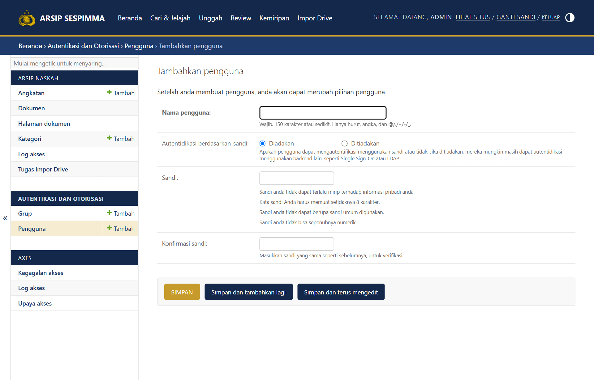
Gambar 8.2 · Menambah pengguna
Mengatur peran
Pada halaman pengguna, bagian Grup, pindahkan grup dari kotak kiri ke kanan:
Grup
Peran
(tanpa grup)
Pembaca: hanya mencari dan membaca.
Pengunggah
Bisa mengunggah naskah.
Reviewer
Review, kemiripan, ubah metadata, impor Drive.
Admin Arsip
Mengelola akun, kategori, angkatan. Centang juga Status staf agar bisa membuka Panel Admin.
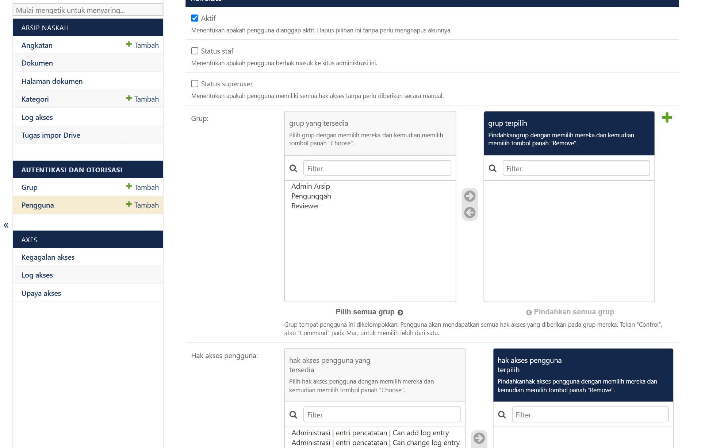
Gambar 8.3 · Memilih grup (peran) untuk pengguna
Menonaktifkan akunUntuk pengguna yang tidak lagi berhak (misalnya sudah lulus lama), hapus centang Aktif di halaman penggunanya, bukan menghapus akunnya, agar catatan aksesnya tetap tersimpan.
Mereset kata sandi yang lupa
Panel Admin → Pengguna → klik NRP pengguna.
Di bawah kolom kata sandi, klik Setel kembali sandi, isi kata sandi baru dua kali, lalu tekan Ganti sandi.
Membuka akun yang terkunci
Bila pengguna tidak bisa menunggu 15 menit: Panel Admin → bagian Axes → Upaya akses (Access attempts) → centang baris berisi NRP pengguna → pilih aksi Hapus → Buka.
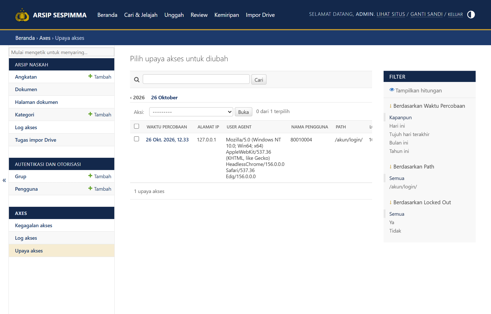
Gambar 8.4 · Daftar percobaan masuk yang gagal (untuk membuka kunci)
Menambah kategori atau angkatan
Panel Admin → Kategori atau Angkatan → + Tambah. Kategori baru (misalnya jenis naskah lain) langsung muncul di formulir unggah dan saringan pencarian. Angkatan baru juga dibuat otomatis saat impor bila sampul mencantumkannya.
BAGIAN 9
Aturan Penggunaan
Arsip ini berisi karya tulis rekan-rekan serdik. Gunakan dengan bertanggung jawab.
Untuk belajar, bukan menyalin. Naskah terdahulu dipakai sebagai referensi dan bahan perbandingan. Menyalin isi naskah lain lalu mengganti lokus akan terdeteksi otomatis oleh cek kemiripan.
Jangan menyebarluaskan naskah ke luar, baik dalam bentuk file, tangkapan layar, maupun cetakan. Setiap PDF memuat nama dan NRP Anda.
Jaga akun Anda. Jangan meminjamkan username dan kata sandi kepada orang lain. Semua aktivitas tercatat atas nama pemilik akun.
Kutip dengan benar. Bila memakai gagasan dari naskah terdahulu, cantumkan sumbernya di naskah Anda.
Laporkan data yang keliru (judul, nama, lokus) kepada Reviewer agar diperbaiki.
BAGIAN 10
Pertanyaan yang Sering Muncul
Saya tidak bisa masuk, padahal kata sandi sudah benar.
Pastikan tidak ada huruf kapital yang tidak sengaja (tombol Caps Lock). Bila muncul tulisan “Terlalu banyak percobaan masuk”, tunggu 15 menit atau minta admin membuka kunci.
Naskah yang saya unggah tidak muncul di pencarian.
Naskah dari Pengunggah baru muncul setelah disetujui Reviewer. Cek statusnya di menu Unggahan Saya.
Naskah saya ditolak. Apa yang harus dilakukan?
Baca catatan penolakan di menu Unggahan Saya, perbaiki naskah, lalu unggah kembali.
Pencarian tidak menemukan naskah yang saya tahu ada.
Coba kata yang lebih umum atau lebih sedikit kata, dan hapus saringan. Bila naskah tersebut hasil scan dan baru diunggah, tunggu beberapa menit sampai proses OCR selesai.
PDF tidak tampil di halaman naskah.
Tekan tombol Buka PDF di tab baru. Ini wajar di HP dan beberapa browser.
Bolehkah saya mengunduh PDF?
Secara bawaan, hanya admin yang memiliki tombol Unduh. Pembaca cukup membaca di browser.
Data naskah saya (nama, lokus, judul) salah.
Hubungi Reviewer. Reviewer dapat memperbaikinya melalui tombol Ubah metadata.
Siapa yang bisa melihat bahwa saya membuka sebuah naskah?
Admin dapat melihat catatan akses (siapa membuka apa dan kapan) untuk keperluan keamanan arsip.
Butuh bantuan lebih lanjut?Hubungi admin ARSIP SESPIMMA: ________________________________ (nama / no. HP)
ARSIP SESPIMMA · Sespim Lemdiklat Polri · Panduan Penggunaan Versi 1, Oktober 2026